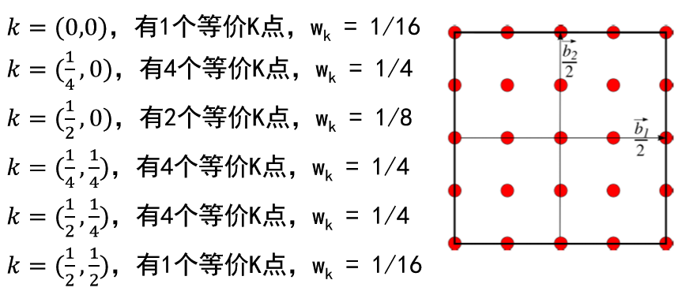

密度泛函理论与应用
这里先放一张课程的思维导图，考完试后再详细些一点东西。
总览

思考与讨论
Hartree 近似是如何求解多电子系统薛定谔方程？
- Hartree 近似采用平均场方法把多电子系统薛定谔方程转化为N个单电子系统薛定谔方程，多电子波函数则是单电子波函数的乘积。
Hartree-Fock 近似在哪些方面做了改进？
- Hartree-Fock 近似在 Hartree 近似的基础上，考虑电子存在交换反对称的特性，多电子波函数表示成单电子波函数的 行列式，也不再是N个单电子方程组成的联立方程组。
在Hartree-Fock 近似下电子轨道能量代表什么物理意义？
- 电子轨道能量代表电子离化能；电子轨道能量会重复计算电子之间的相互作用，电子轨道能量之和不等于多电子系 统的HF总能量。
电子的库伦能、交换能和关联能的来源的什么？
- 库伦能、交换能和关联能都是来自电子之间的库伦相互作用
- 库伦能是把电子之间的库伦相互作用简化成一个平均场来代替。多电子的薛定谔方程可以分离变量，变成N个单电子方程；多电子的波函数是单电子波函数的乘积。
- 交换能是在前面的平均场基础上，考虑电子的交换反对称特性。 多电子的波函数写成单电子波函数的行列式。
- 关联能是使用平均场替代电子之间的库伦相互作用所造成的误差。 单电子波函数的行列式并不是多电子系统的精确解。
密度泛函理论是从 TFD 理论发展起来的，为什么TFD 理论没有得到广泛应用？密度泛函理论与之相比在什么地方进行改进？
- TFD 理论提出总能量是电子密度的泛函，但是其中电 子动能项的密度泛函形式过于简单，导致计算误差较大。这是 TFD 理论没有得到广泛应用最主要的原因。
- DFT 理论不是使用电子密度，而是使用电子波函数来 计算动能项。这种方法计算精度高，避免动能项没有 精确泛函的问题，同时把动能项和电子间库伦相互作 用的误差都放在交换关联势中，这部分能量占比较小。
DFT 理论的基础是什么？为什么说 DFT 理论是精确的，但无法实际使用？
- DFT 理论的基础是 HK 定理，其给出两个结论：所有 可观察量都是密度的泛函；总能量对密度的变分极小 就是体系的基态。
- HK 定理已经被精确证明，证明过程没有任何近似。所 以 DFT 理论本身是精确的，只是其中只有外势项的密 度泛函表达式是精确已知的；动能项及电子-电子相互 作用项没有精确的密度泛函表达式。
Kohn 和 Sham 在 HK 定理的基础上做了什么改进？KS 方程中的交换关联包含哪些部分？
- Kohn 和 Sham 提出用一个无相互作用的参考电子系统来代替有相互作用的多电子系统。假定无相互作用的参考电子系统与相互作用的多电子系统有相同的基态电子密度，通过求解参考电子系统，得到真实的多电子系统的基态能量和基态电荷密度。
- 在 KS 方程中参考电子系统的动能泛函是可以求解出来的，库伦相互作用可以使用平均场近似，其它误差 都放在交换关联中，其中包含交换能、关联能、电子动能的误差以及库伦势的自相互作用修正。
赝势方法的理论基础是什么？
- 根据实验数据总结，材料的特性只跟价电子相关， 芯电子受不同环境的影响非常小，基本上局域在原子核周围。
赝势方法解决什么问题？常用的赝势方法有哪些？
- 赝势方法把多电子系统被划分为芯电子系统与价电子系统，其中芯电子受外界影响非常小，可以等价成一个势场。 常用的赝势方法有模守恒赝（NCPP）、超软赝势 （USPP）、投影扩张波赝势（PAW）
构造模守恒赝势时需要满足的4个条件？
- 赝波函数没有径向节点
- 在截断半径外，赝波函数与全电子波函数要相同
- 在截断半径内，两种波函数给出的总电荷要相同
- 赝波函数与全电子波函数要有相同的本征值
为什么在赝势方法中需要核修正？
- 因为交换关联势是非线性的，所以计算价电子感受到 的交换关联势需要加入核电子的贡献。
在动量空间中，总能量和 KS 方程中都包含发散项，这些放散项在电中性的情况下都互相抵消。在实际研究过程中如果需要 模拟带电系统，需要如何处理？
- 最简单的处理方法就是增加补充电荷，让整个系 统处于电中性状态。补充电荷应该均匀分布在整个模拟空间，这样才不会产生额外的电场分布来改变真实系统的电场分布。
如果按照下图K点抽样，考虑对称性后， 还剩下几个K点，每个K点权重？
原子受力是如何计算的？得到原子受力有什么用处？
- 通过总能泛函对原子坐标的微分可以得到原子受力。得到原子受力可以用于结构优化和分子动力学模拟。
简述 Born-Oppenheimer 分子动力学和 Car-Parrinello 分子动力学之间的差异
- Born-Oppenheimer 分子动力学是每步动力学演化都 需要通过自洽计算得到原子受力，电子始终存于基
- Car-Parrinello分子动力学是把电子波函数和原子坐标一起演化，不需要每步动力学演化都通过自洽计 算得到原子受力，电子不是处于严格的基态。
简述 APW 和 PW 之间的区别？
- PW是电子在真空中的本征波函数，可以很好地描述近自由电子， 与能量无关。APW则是把全空间区域分成两部分：靠近原子核 区域和间隙区域，在间隙区域使用平面波描述，在靠近原子核 区域使用原子轨道描述，与能量相关。
简述 LAPW 对 APW 做了什么改进？
- 虽然APW基函数可以描述电子在不同区域的特征，但是其于能量相关，在计算过程中需要额外增加一个循环去寻找本征能量， 计算量非常大。
- LAPW是在APW的基础上进行线性展开，可以使用给定的一个能量值及其微分值来近似描述不同能量的基函数，不需要增加寻找本征能量的过程。
原子轨道的一般形式是什么？常用的原子轨道有哪些？
- 原子轨道的一般形式是径向波函数乘以角向球谐函数。 常用的原子轨道有 STO、 GTO 和 NAO。
高斯型轨道（GTO）积分为什么可以解析求解？
- 因为 GTO 具有加法特性，多中心的高斯函数乘积可以转化为单 中心的高斯函数，而单中心的高斯函数积分是可以解析求解的。 所以高斯型轨道对哈密顿量的积分可以解析求解。
中性原子势的来源是什么？为什么是短程作用？
- 中性原子势是局域赝势和参考电荷共同作用下的势场，在电中性的情况下把长程库伦相互作用的发散项相抵消。因为在截断半径之外总电荷为零，所以势场在截断半径之外也为零。
总能量中短程项的来源是什么?
- 短程项是原子核之间的相互作用能减去参考电荷之间的相互作用能，在电中性的情况下把长程库伦相互作用的发散项相抵消。
Order-N 方法的物理基础是什么？
- Order-N方法的物理基础是密度矩阵的局域性。也就是说系统电荷密度的分布只依赖电荷周围的影响，远处的电荷对其影响可以忽略不计。
Order-N 方法的适用范围有哪些？
- Order-N方法适用于系统总能量相关的物理特性，例如总能量、 电荷密度、原子受力等等。而跟系统波函数相关的物理特性是没法求解的。